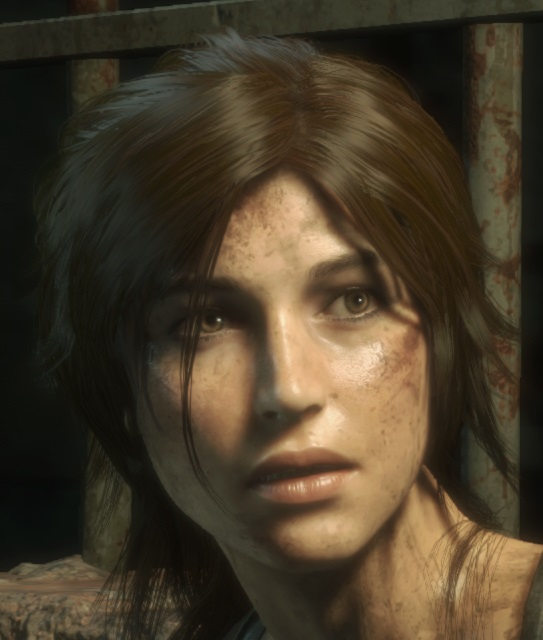

-
thumb_upWhat I think they got right Lara Croft
The latest iteration of the Tomb Raider series builds on our continuing story of the young Lara Croft. We follow Lara through Siberia in search of the fabled city of Kitezh.
The underlying game engine has remained the same and the game-play experience is familiar. The controls have been tweaked by adding secondary actions to familiar action buttons. This direct memory mapping creates a comfortable transition from the previous version to the new game. -
thumb_downWhat isnt so good
Framerate target was set at 30 FPS, this is the minimum standard for playability. Many AAA titles try to reach the accepted standard of 60 FPS. Cut scenes are generated at a reduced resolution to ensure that the minimum FPS target is reached. This results in a slight degradation in quality, but attempts to ensure that the most important story elements are not effected by hardware deficiencies.
-
gradeStandouts
Significant improvement to TressFX hair effects. Since we are in Siberia, it will be snowing. The latest version of TressFX allows for snow to accumulate on Lara’s hair. This increases our immersion and visually bridges the gap between the player and the character. The player knows how it feels to have your hair full of snow. This is conceptual feedback. Players have an understanding of the concept being presented. They have the visibility of hair full of snow and recall their own memories that map to similar conditions.
-
gamesgameplay
Story intertwined with relevant puzzles is the mainstay of the Tomb Raider franchise and although I have not finished the game, I feel that the story and puzzle elements have not let me down. Some of the puzzles are optional and I never feel like skipping or not finding an entrance right away is a detriment to the main story. Many are presented during travel between chapters and this give the player a nice break from some of the more difficult puzzles presented during the story.
Equipment and Weapon variety has been expanded and the customization progress offers constraints that give intention as feedback. The player sees the constraints of an upgrade and is given a clear path to overcome the constraint. The progress is signified visibly by additions to the characters in game appearance. If you did not have a quiver for your arrows, and you upgraded to a quiver, Lara now carries a quiver on her back and can carry more arrows.